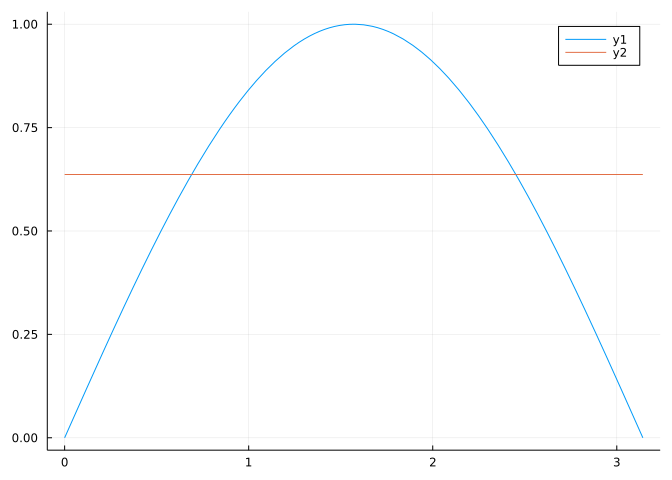

plot(sin, 0, pi)
plot!(x -> 2/pi)
This section uses these add-on packages:
Let \(f(x)\) be a continuous function over the interval \([a,b]\) with \(a < b\).
The average value of \(f\) over \([a,b]\) is defined by:
\[ \frac{1}{b-a} \int_a^b f(x) dx. \]
If \(f\) is a constant, this is just the contant value, as would be expected. If \(f\) is piecewise linear, then this is the weighted average of these constants.
The average velocity between times \(a < b\), is simply the change in position during the time interval divided by the change in time. In notation, this would be \((x(b) - x(a)) / (b-a)\). If \(v(t) = x'(t)\) is the velocity, then by the second part of the fundamental theorem of calculus, we have, in agreement with the definition above, that:
\[ \text{average velocity} = \frac{x(b) - x(a)}{b-a} = \frac{1}{b-a} \int_a^b v(t) dt. \]
The average speed is the change in total distance over time, which is given by
\[ \text{average speed} = \frac{1}{b-a} \int_a^b \lvert v(t)\rvert dt. \]
Let \(\bar{v}\) be the average velocity. Then we have \(\bar{v} \cdot(b-a) = x(b) - x(a)\), or the change in position can be written as a constant (\(\bar{v}\)) times the time, as though we had a constant velocity. This is an old intuition. Bressoud comments on the special case known to scholars at Merton College around \(1350\) that the distance traveled by an object under uniformly increasing velocity starting at \(v_0\) and ending at \(v_t\) is equal to the distance traveled by an object with constant velocity of \((v_0 + v_t)/2\).
What is the average value of \(f(x)=\sin(x)\) over \([0, \pi]\)?
\[ \text{average} = \frac{1}{\pi-0} \int_0^\pi \sin(x) dx = \frac{1}{\pi} (-\cos(x)) \big|_0^\pi = \frac{2}{\pi} \]
Visually, we have:
What is the average value of the function \(f\) which is \(1\) between \([0,3]\), \(2\) between \((3,5]\) and \(1\) between \((5,6]\)?
Though not continuous, \(f(x)\) is integrable as it contains only jumps. The integral from \([0,6]\) can be computed with geometry: \(3\cdot 3 + 2 \cdot 2 + 1 \cdot 1 = 14\). The average then is \(14/(6-0) = 7/3\).
What is the average value of the function \(e^{-x}\) between \(0\) and \(\log(2)\)?
\[ \begin{align*} \text{average} = \frac{1}{\log(2) - 0} \int_0^{\log(2)} e^{-x} dx\\ &= \frac{1}{\log(2)} (-e^{-x}) \big|_0^{\log(2)}\\ &= -\frac{1}{\log(2)} (\frac{1}{2} - 1)\\ &= \frac{1}{2\log(2)}. \end{align*} \]
Visualizing, we have
If \(f(x)\) is assumed integrable, the average value of \(f(x)\) is defined, as above. Re-expressing gives that there exists a \(K\) with
\[ K \cdot (b-a) = \int_a^b f(x) dx. \]
When we assume that \(f(x)\) is continuous, we can describe \(K\) as a value in the range of \(f\):
The mean value theorem for integrals: Let \(f(x)\) be a continuous function on \([a,b]\) with \(a < b\). Then there exists \(c\) with \(a \leq c \leq b\) with
\(f(c) \cdot (b-a) = \int_a^b f(x) dx.\)`
The proof comes from the intermediate value theorem and the extreme value theorem. Since \(f\) is continuous on a closed interval, there exists values \(m\) and \(M\) with \(f(c_m) = m \leq f(x) \leq M=f(c_M)\), for some \(c_m\) and \(c_M\) in the interval \([a,b]\). Since \(m \leq f(x) \leq M\), we must have:
\[ m \cdot (b-a) \leq K\cdot(b-a) \leq M\cdot(b-a). \]
So in particular \(K\) is in \([m, M]\). But \(m\) and \(M\) correspond to values of \(f(x)\), so by the intermediate value theorem, \(K=f(c)\) for some \(c\) that must lie in between \(c_m\) and \(c_M\), which means as well that it must be in \([a,b]\).
The mean value theorem is exactly what is needed to prove formally the second part of the Fundamental Theorem of Calculus. Again, suppose \(f(x)\) is continuous on \([a,b]\) with \(a < b\). For any \(a < x < b\), we define \(F(x) = \int_a^x f(u) du\). Then the derivative of \(F\) exists and is \(f\).
Let \(h>0\). Then consider the forward difference \((F(x+h) - F(x))/h\). Rewriting gives:
\[ \frac{\int_a^{x+h} f(u) du - \int_a^x f(u) du}{h} =\frac{\int_x^{x+h} f(u) du}{h} = f(\xi(h)). \]
The value \(\xi(h)\) is just the \(c\) corresponding to a given value in \([x, x+h]\) guaranteed by the mean value theorem. We only know that \(x \leq \xi(h) \leq x+h\). But this is plenty - it says that \(\lim_{h \rightarrow 0+} \xi(h) = x\). Using the fact that \(f\) is continuous and the known properties of limits of compositions of functions this gives \(\lim_{h \rightarrow 0+} f(\xi(h)) = f(x)\). But this means that the (right) limit of the secant line expression exists and is equal to \(f(x)\), which is what we want to prove. Repeating a similar argument when \(h < 0\), finishes the proof.
The basic notion used is simply that for small \(h\), this expression is well approximated by the left Riemann sum taken over \([x, x+h]\):
\[ f(\xi(h)) \cdot h = \int_x^{x+h} f(u) du. \]
Between \(0\) and \(1\) a function is constantly \(1\). Between \(1\) and \(2\) the function is constantly \(2\). What is the average value of the function over the interval \([0,2]\)?
Between \(0\) and \(2\) a function is constantly \(1\). Between \(2\) and \(3\) the function is constantly \(2\). What is the average value of the function over the interval \([0,3]\)?
What integral will show the intuition of the Merton College scholars that the distance traveled by an object under uniformly increasing velocity starting at \(v_0\) and ending at \(v_t\) is equal to the distance traveled by an object with constant velocity of \((v_0 + v_t)/2\).
Find the average value of \(\cos(x)\) over the interval \([-\pi/2, \pi/2]\).
Find the average value of \(\cos(x)\) over the interval \([0, \pi]\).
Find the average value of \(f(x) = e^{-2x}\) between \(0\) and \(2\).
Find the average value of \(f(x) = \sin(x)^2\) over the \(0\), \(\pi\).
Which is bigger? The average value of \(f(x) = x^{10}\) or the average value of \(g(x) = \lvert x \rvert\) over the interval \([0,1]\)?
Define a family of functions over the interval \([0,1]\) by \(f(x; a,b) = x^a \cdot (1-x)^b\). Which has a greater average, \(f(x; 2,3)\) or \(f(x; 3,4)\)?
Suppose the average value of \(f(x)\) over \([a,b]\) is \(100\). What is the average value of \(100 f(x)\) over \([a,b]\)?
Suppose \(f(x)\) is continuous and positive on \([a,b]\).
\[ F(x) = \int_a^x f(x) dx > 0 \]
For \(f(x) = x^2\), which is bigger: the average of the function \(f(x)\) over \([0,1]\) or the geometric mean which is the exponential of the average of the logarithm of \(f\) over the same interval?